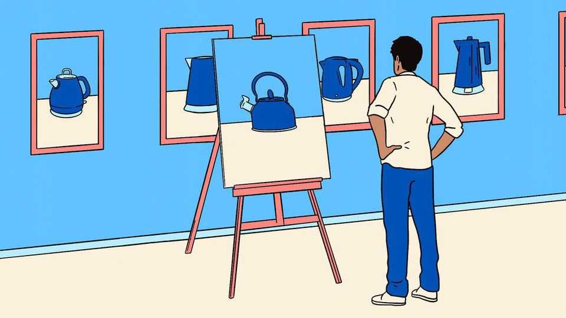

How to sell a kettle
Brand positioning reaches boiling point
July 16th 2026

You asked me to develop ideas for a new brand strategy. As a reminder, this is the messaging that we use at the moment: “If you want to boil water, you need a kettle. If you need a kettle, you want the Brewmaster. The fast, reliable and affordable way to make the perfect drink.” The positioning is practical, price-conscious and successful. But it is also unexciting. If we want to grow, we need to take a higher share of mind with a different sort of consumer.
I have put some sample copy for each positioning strategy below, and taken the liberty of adapting the product name and stressing planned new features where that feels appropriate. I look forward to hearing your comments when we meet in a couple of weeks.
Luxury. Water is the wellspring of life, the faint promise of evolution, the pulsing aquifer of quintessence. Water is the bringer of dreams, fragile and precious. Water is the mark of organisms taking shape, of mighty civilisations marching through the centuries, of the search for habitable planets in distant galaxies. And here on Earth, water is the source of profound moments of human connection. The Eau Chaud is an idea more than it is an object. You never own a kettle. You merely look after it until the next conversation.
Premium, design-led. You would know it by its silhouette alone. The unmistakable spout-and-handle shape of the Kettöl adds lustre to every kitchen. Its muted tones ensure that it blends with every aesthetic choice. The mid-century-inspired design features a classic plug and cable, which connects to a perfectly rounded base station. Brushed steel surrounds a transparent water indicator with stylised pictures of cups, so you always know how full the Kettöl is. A warm blue light tells you that the kettle is on, as does the gently immersive sound of boiling. Once the kettle has boiled, it can be lifted from the base station by using a laminated blond-wood handle and taken directly to your waiting cups. And so on.
For early adopters. The KetGPT takes the kettle into the agentic era. At the front door and fancy a cup of tea? Just woken up and desperate for your first coffee? Get out your phone, fire up the KetGPT app, enter your login details and tell your kettle to start boiling. That’s not all. You can ask your kettle how the boiling process is going in text or voice mode, and it will reply. It will even send a notification to your phone when the boiling process is complete. You set the task. The KetGPT will take it from there, entirely autonomously. (Token costs not included.)
Environmental. Introducing the Keco—for people who care. Our latest kettle is designed to retain heat, meaning that water is still tepid four hours after it has boiled. It runs on electricity. It can be recycled. A kettle should warm water, not the planet. (No children are involved in manufacturing of the Keco.)
Gen Z. Enjoy some coastal grandma and eclectic grandpa core with the new Vintage kettle. For content creators who crave cosy-cottage vibes. [If we go down this route, I will really need some help. I talked to a few young people and they suggested these words, but none of it makes any sense.]
Heritage. The Stove Top has been warming water and hearts for well over 100 years. Still today, its comforting digital whistle marks the end of every boil, the start of every pour. Each Stove Top is assembled and put into its box by employees who have spent their lives around kettles. Our master kettlers live in an industrial heartland and some of them wear overalls. Anyone can make a hot drink. Only the Stove Top can make you feel part of history.
Wellness. The Kato is a central part of your health and fitness regime. Its water-heating technology fits seamlessly into every nutrition plan, from turmeric lattes and bone broths to chicory coffees and matcha green teas. Our trained team of advisers is on hand 24 hours a day, seven days a week to answer your queries. Worried about the effect of steam on your breathing? Uncertain what all those flaky bits at the bottom are doing to your microbiome? The Kato is with you every step of the way on your journey to becoming a better you. (Comes with a small wearable sensor that tells you whether you are still alive.)
Populist. If scalding hot water and the risk of a burn do not scare you, buy the Boiler. A kettle for real patriots. Not suitable for herbal teas and other woke beverages. Used by veterans, among others. Made in this country, except for some essential components. ■
Step inside the world of work with our Bartleby newsletter. Each week our white-collar oracle muses on the agonies of office life.